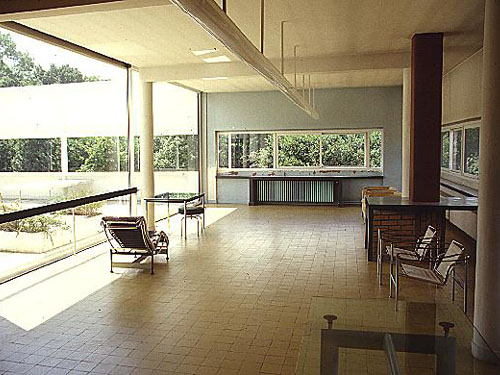
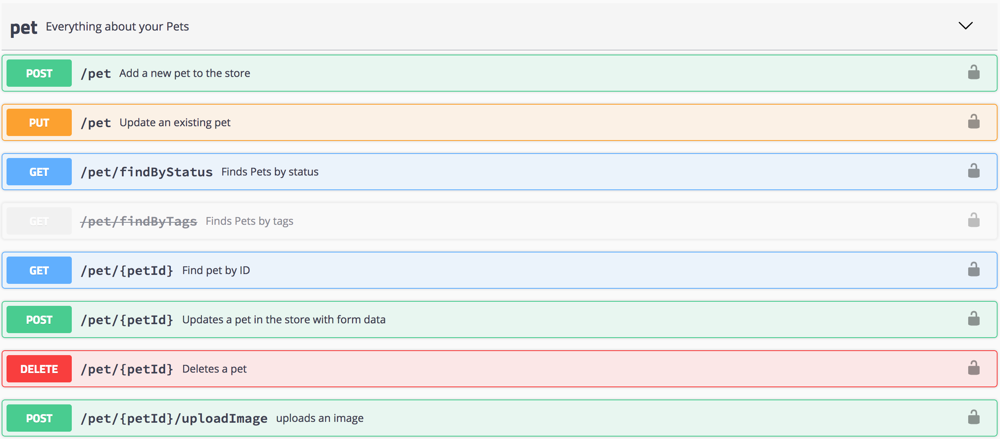

API Style Matters
(3) Architectural Styles
- Architectural Style vs. Architecture
- Architectural Style: General principles informing the creation of an architecture
- Architecture: Designing a solution to a problem according to given constraints
- Architectural styles inform and guide the creation of architectures

- Architecture: [http://en.wikipedia.org/wiki/Louvre]
- Architectural Style: [http://en.wikipedia.org/wiki/Baroque_architecture]
|

- Architecture: [http://en.wikipedia.org/wiki/Villa_Savoye]
- Architectural Style: [http://en.wikipedia.org/wiki/International_Style_(architecture)]
|
(4) Remote Procedure Call (RPC)
- Derived from traditional SE approaches
- Consumers know when to call which functions
- Control flow is left to the consumer
Function libraries
are exposed as an API endpoint
- There are no constraints on the capabilities exposed
- Capabilities are primarily structured by functions and not by resources
- There are many ways of mapping RPC onto a Web API
- Classical approaches are XML-RPC and SOAP
- More contemporary ones are JSON-based
(5) Tunnel Style
- Driven by the RPC idea of exposing a set of callable functions
- Popularized by XML-RPC and the Simple Object Access Protocol (SOAP)
- All functions are made available at one URI endpoint (or port)
- All interactions are tunneled through interactions with this one URI
- Good fit for
hiding distribution
approach of RPC [Remote Procedure Call (RPC) (1)]
- Remote
function libraries
are treated like local ones
- Function signatures (WSDL) can be used to generate stub code
- Treats HTTP as a tunnel and not as an application protocol
- Decline in popularity since the advent of JSON-based Web APIs
- Tightly coupled model causes brittleness in decentralized scenarios
- XML serialization introduces the need for data-binding and other tooling
(6) URI Style
- Focusing on
callable resources
that are exposed at documented URIs
- Most popular description/documentation formats focus on this style
- Swagger/OpenAPI, RAML, API Blueprint, WADL
- Encourages hardcoded workflows in clients (introducing brittleness)
- Developers copy URIs into their code and changing any breaks clients
- Effectively creates a complete
sitemap
of all available resources
- URIs are used to access uniquely identified resources
- URI Templates are used to access resource collections
(7) URI Style Example: Swagger Pet Store

(8) Swagger Source Code
"paths": {
"/pet": {
"post": {
"tags": ["pet"],
"summary": "Add a new pet to the store",
"description": "",
"operationId": "addPet",
"consumes": [
"application/json",
"application/xml"
],
"produces": [
"application/xml",
"application/json"
],
"parameters": [{
"in": "body",
"name": "body",
"description": "Pet object that needs to be added to the store",
"required": true,
"schema": {"$ref": "#/definitions/Pet"}
}],
"responses": {"405": {"description": "Invalid input"}},
"security": [{"petstore_auth": [
"write:pets",
"read:pets"
]}]
},